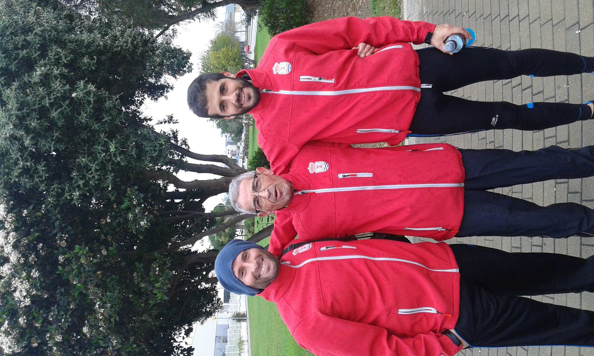
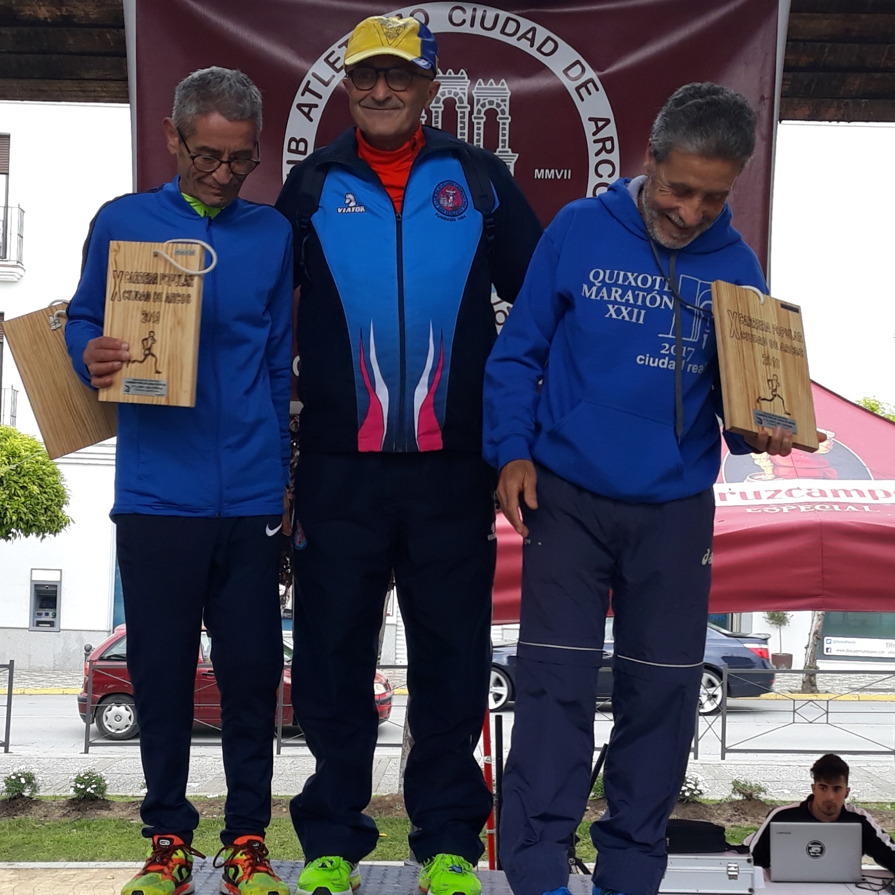
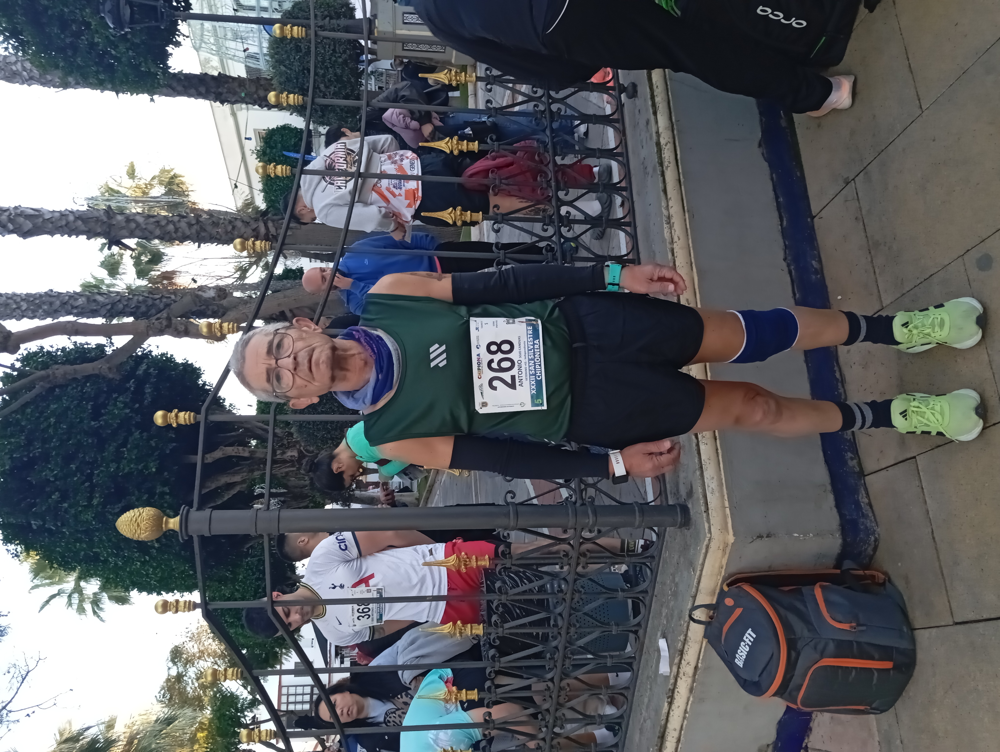
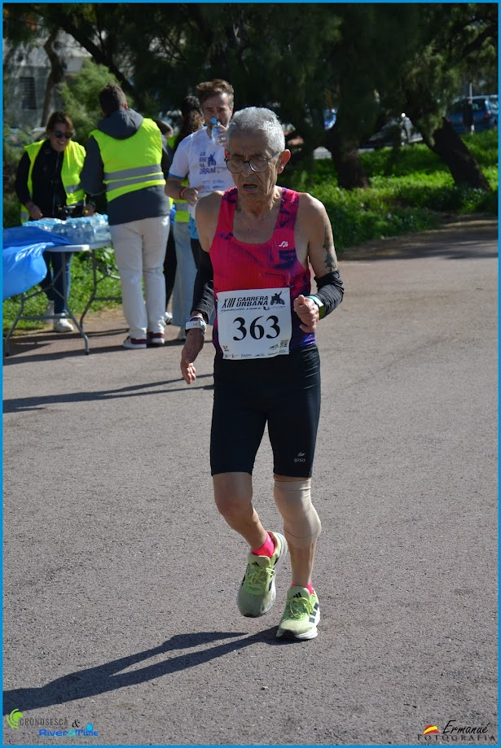
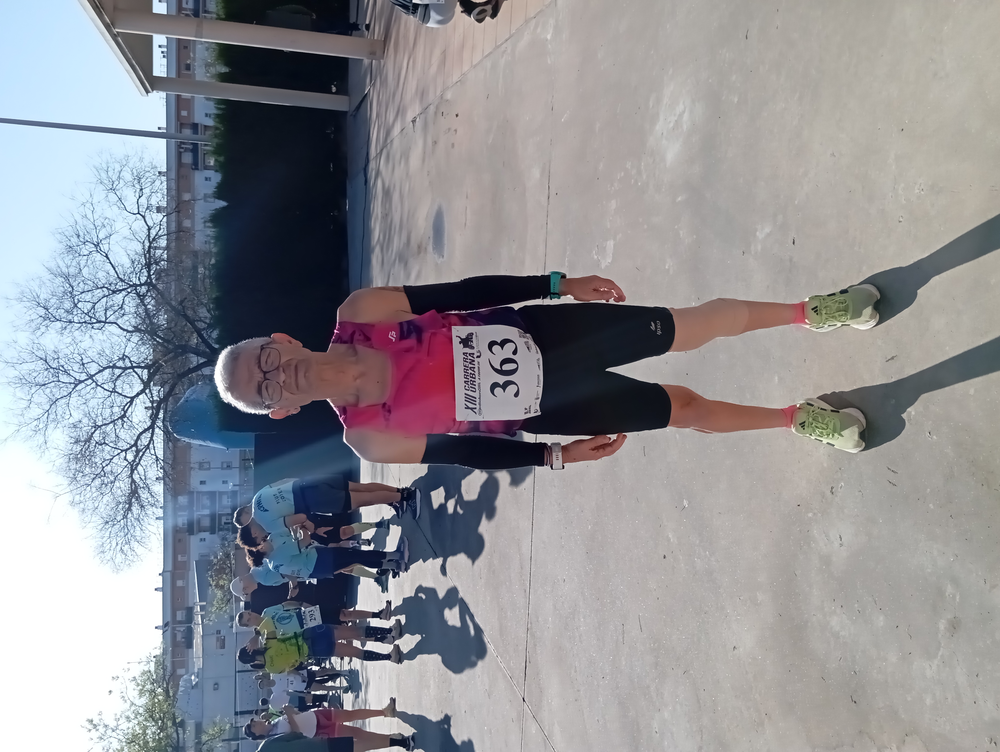

Los primeros años
Todo comenzó con las ganas de hacer deporte y descubrir hasta dónde podía llegar corriendo.
Al principio todo era aprendizaje. Había que conocer el cuerpo, acostumbrarse al entrenamiento y entender que mejorar no ocurre de un día para otro.
Poco a poco correr empezó a convertirse en una parte importante de mi vida.

Atletismo de Nueva Jarilla
Con el tiempo llegaron nuevas experiencias y nuevas personas que fueron formando parte de este camino.
Atletismo de Nueva Jarilla significó una etapa importante dentro de mi trayectoria. Entrenar, competir y compartir kilómetros hizo que el atletismo fuera todavía más especial.
Porque este deporte también se construye junto a los demás.

La competición
Llegó el momento de ponerse un dorsal y comprobar en las carreras todo aquello que se había trabajado durante los entrenamientos.
Competir siempre ha tenido algo especial: los nervios, la salida, el esfuerzo y esa sensación de cruzar la meta.
Cada carrera enseñaba algo diferente y cada experiencia servía para seguir aprendiendo.

El primer pódium
Hay momentos que permanecen en la memoria para siempre. Uno de ellos fue subir al pódium.
Después de tantos entrenamientos y tantas horas de esfuerzo, recibir el reconocimiento de una carrera tiene un significado especial.
No era solamente el resultado. Era la confirmación de que todo aquel trabajo había merecido la pena.
“Cada carrera deja algo detrás: una experiencia, una enseñanza y un recuerdo.”
EL CAMINO CONTINÚA25 años corriendo
Los años fueron pasando y correr dejó de ser simplemente una actividad deportiva para convertirse en una forma de vida.
Mirar hacia atrás permite comprobar todo lo que ha cambiado: el cuerpo, los entrenamientos, las carreras y también la forma de entender el deporte.
Pero hay algo que permanece: las ganas de seguir avanzando.


Las dificultades
No todo ha sido fácil. También han llegado las lesiones, los momentos en los que el cuerpo obliga a parar y las dudas sobre cuándo volver.
Una lesión cambia muchas cosas. Obliga a tener paciencia, escuchar al cuerpo y entender que descansar también forma parte del entrenamiento.
Pero las dificultades también forman parte de la historia. Y cada vez que se vuelve a empezar, el camino continúa.

Una nueva etapa
Después de tantos años corriendo, llega un momento en el que hay que aceptar los cambios y buscar una nueva manera de seguir disfrutando del deporte.
Ahora comienza una etapa diferente. La marcha atlética aparece como un nuevo camino para continuar ligado al atletismo y seguir disfrutando de la competición.
Todavía estoy aprendiendo, descubriendo una técnica diferente y acostumbrándome a una nueva forma de moverme.

Mi nueva etapa: la marcha
El camino cambia, pero las ganas de seguir haciendo deporte permanecen.
Comenzar con la marcha atlética significa aprender de nuevo: conocer la técnica, escuchar el cuerpo y avanzar poco a poco.
No sé todavía hasta dónde me llevará esta nueva etapa, pero sí sé que quiero disfrutarla y seguir sintiéndome parte del atletismo.
Después de tantos kilómetros corriendo, comienza ahora una nueva forma de seguir caminando hacia delante.